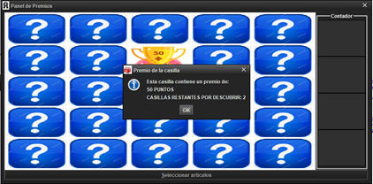
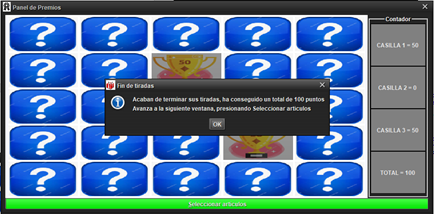

Para seleccionar una casilla del panel solamente tenemos que hacer click izquierdo sobre la casilla
que queremos pulsar, y dependiendo de la casilla que hemos pulsado se deplegará una ventana de información
que tendrá diferente contenido.
Disponemos de tres intentos inicialmente, esto es decir, podemos descubrir tres casillas (no significa que
luego podamos tener más intentos al desvelar casillas especiales).
Hay tres tipos de casillas: las que dan premio (pueden dar 0, 50, 250 o 1000 puntos), las que más aparecen
son las de 0 puntos (hay 8 en total); existen otros dos tipos más de casillas: las especiales (que te dan
una tirada más, hay dos casillas de este tipo) y las que doblan el contador (las X2, solamente hay una casilla
de este tipo).
En la imagen siguiente, hemos seleccionado la casilla número 8, cuyo premio son 50 puntos, todavía nos
quedan 2 casillas por descubrir. Cuando pulsemos OK, la primera posición del contador cambiará de color
negro a gris, y aparecerá el premio de esta casilla (50 puntos).

Cuando hemos seleccionado todas las casillas que nos permite la aplicación (tantas como el número de
intentos), se habilitará el botón verde de abajo y aparecerán los puntos totales que hemos conseguido en
el contador de abajo a la derecha.
